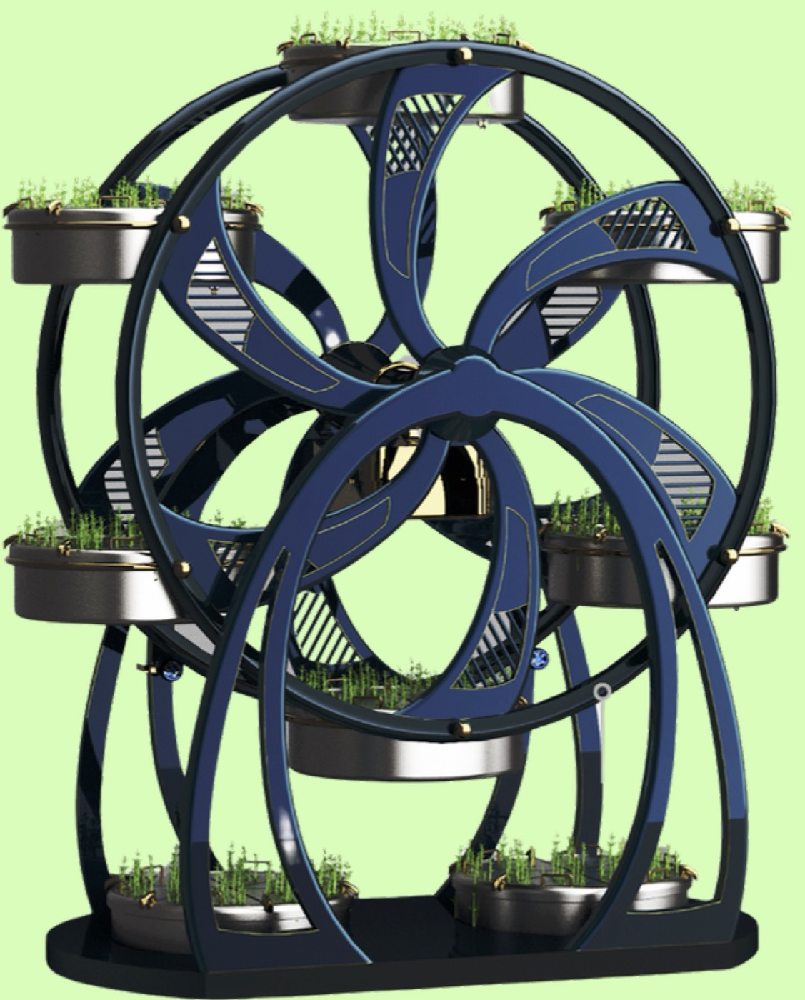
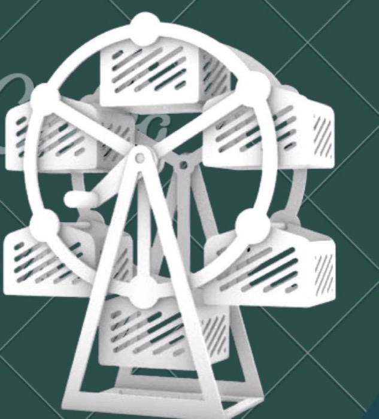
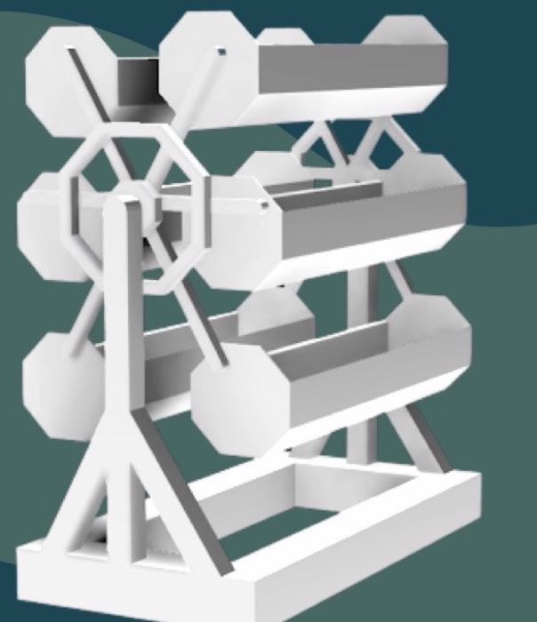
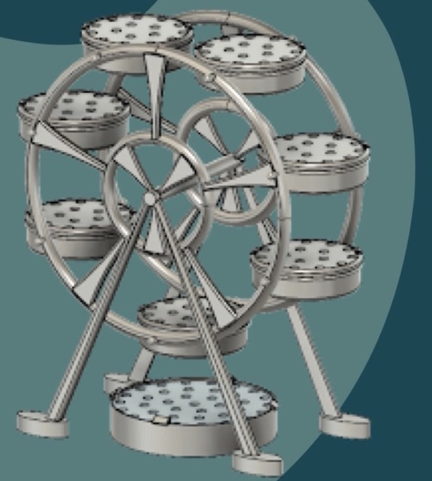
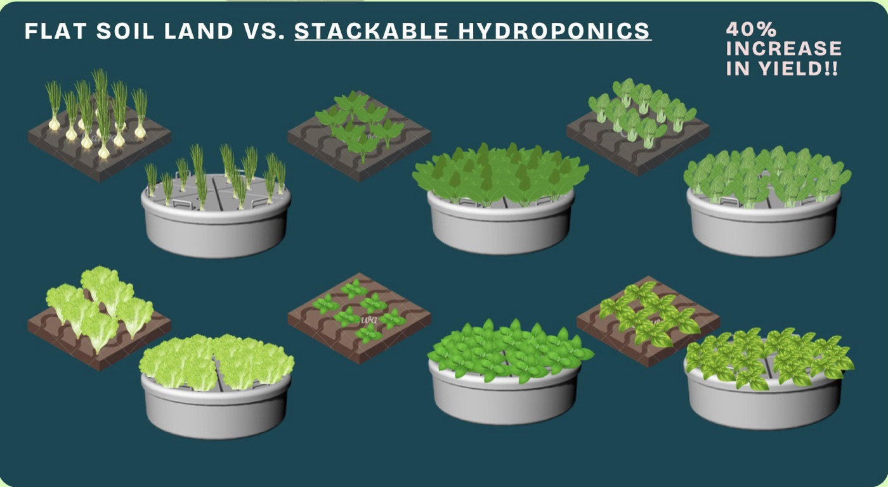
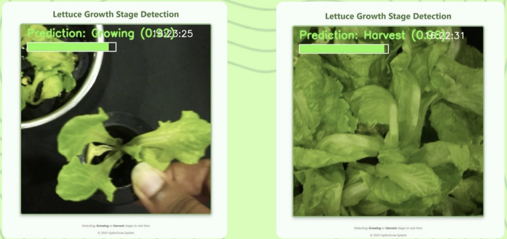
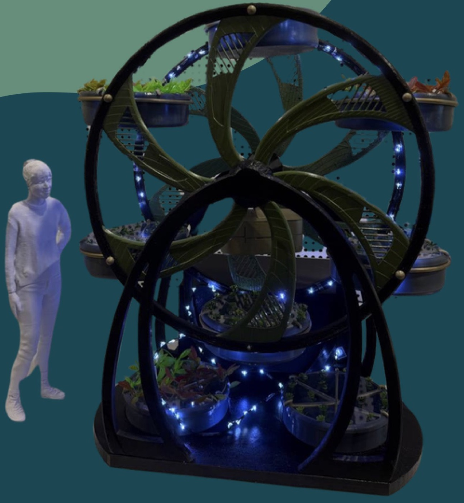
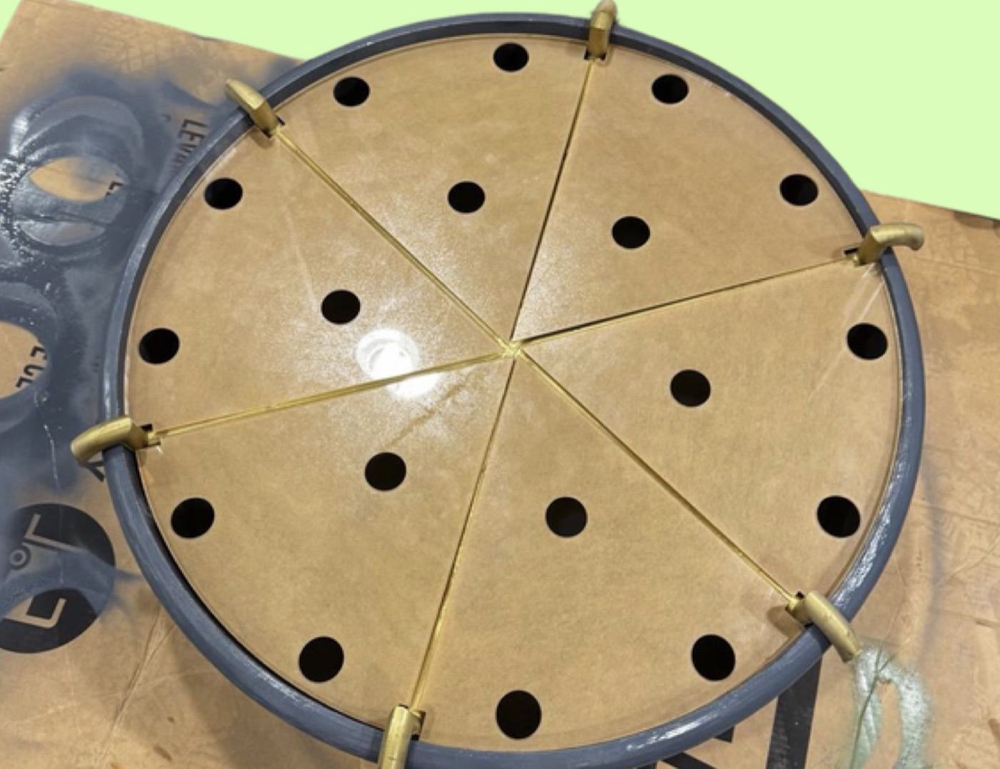

The client
A garden for a couple who travel
Ron and Jen were moving into a new home with a small balcony. Jen loves growing edible plants and wanted to share the harvest with neighbours. Ron travels often, and they both wanted something that would look after itself while they were away.
We got to know them over three sessions. In the first, they told us about their lifestyle. In the second, Ron invited us to a design charrette for the new home, where the architects and environmental team shared their 3D model, floor plans and water estimates. In the third, we visited their current home to see how they live and garden, and to get feedback on our early concepts. We also visited UrbanGreenDot, a local indoor hydroponics business, to learn how commercial growers set up their systems.
How might we design an integrated planting system that is user-friendly and low-maintenance?
With so much travel, it's hard to know when crops are ready, so harvests get missed or spoil.
Plant care shouldn't mean bending, stretching or reaching, whatever your age or mobility.
The garden should keep growing with very little effort while they're away.
Process
From a flat plot to a Ferris wheel
Our first idea was a 2 m × 1 m soil bed with a camera and a motorised cover. It was bulky, heavy and couldn't grow more plants without taking more floor space. A vertical system could, but tall planters bring back the reaching problem. A Ferris wheel solved both: it stacks planters vertically, and rotates so each one comes down to the user.



Soil turned out to be the real problem: it made the wheel too heavy to turn. We switched to hydroponics using the Kratky method, which needs no pump or electricity. Each planter holds enough nutrient water to grow its plants all the way to harvest. The lighter, stacked system also gave about 40% more yield than the flat soil plot.

We chose six edible plants that fit the planters and the climate and are ready within 30 days: mint, Thai basil, bok choy, kang kong, spring onion and lettuce. Bell peppers and carrots didn't make the list, because they need climbing space and deeper soil.
Final design
Every plant within reach
- A 2.5 m frame with flower-shaped spokes, inspired by the Falkirk Wheel and car rims
- The wheel turns 180° on its own twice a day to share out the sunlight, and can be turned by hand at harvest time
- Each 63 cm planter has six removable "pizza slice" covers holding 3 plants each, 18 per planter
- A rotating rim lets you turn the planter itself, so you never reach across it
- Grow lights along the frame top up natural light to the 12 to 16 hours plants need
Smart monitoring
It tells you when to harvest
A camera on a Raspberry Pi watches the plants, and a computer vision model labels them as still growing or ready to harvest. An ESP32 with a water level sensor flags when a planter runs low. Both feed a concept app, so Ron and Jen could check on the garden while travelling.

The team trained the model on lettuce images from Roboflow, converted it to TensorFlow Lite so it could run on the Pi itself, and showed the live feed with its predictions on a small Flask web page. UrbanGreenDot gave us lettuce at both stages to demonstrate it.
My part · prototyping and fabrication
Building it on a $1,000 budget
At full size, Econova would stand 2.5 m tall and hold up to 400 kg of water, far beyond our budget and what 3D-printed parts could carry. So we built two prototypes: a 1:5 model of the whole system and a full-size single planter.

- The 1:5 model's parts were printed to tolerances tight enough to slot together without glue
- The full-size rim was too big for our printer, so it was printed in 12 pieces. Glue held them in place, a soldering iron fused the joints, and heat-shrink tape sealed them, enough to carry about 2 kg of covers and plants.
- The six cover slices were laser-cut from acrylic
- PLA turned out to be porous. Silicone gel, paint and silicone spray all leaked, and a thin plastic liner finally made the planter watertight.

What I did
- Took part in the client sessions, the design charrette and the home visit that shaped our brief
- 3D printed and fabricated the prototypes, working through the rim joints and the waterproofing
What I learned
Agree on the scope early, then build fast
Talking with Ron and Jen early and often kept our scope tied to their home and lifestyle. Building early showed us the real problems, like a wheel too heavy to turn and a planter that leaked, which a render would never have shown us. And presenting the work at our booth taught me that explaining why something matters is as important as building it.
Team: Valerie Lim, Pritikaa Prabhu, John Loh, Reina Tay, Felix Teo. Mentors: Prof. Michael Reeves, Wei Lek, Hunn Wai.